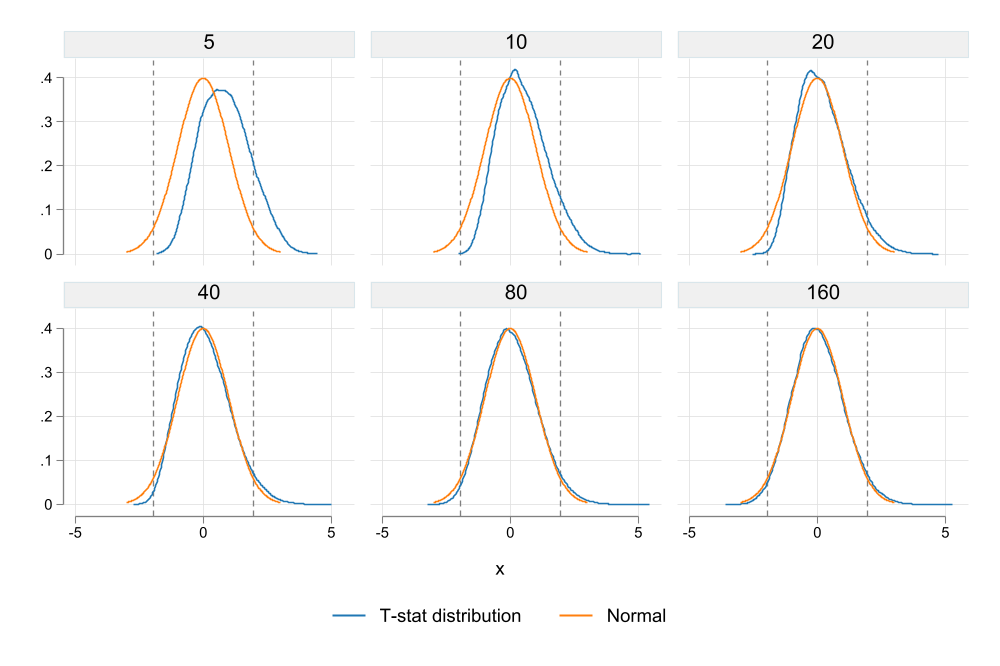
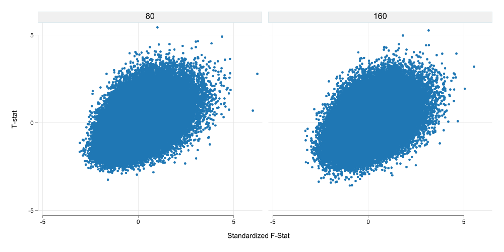
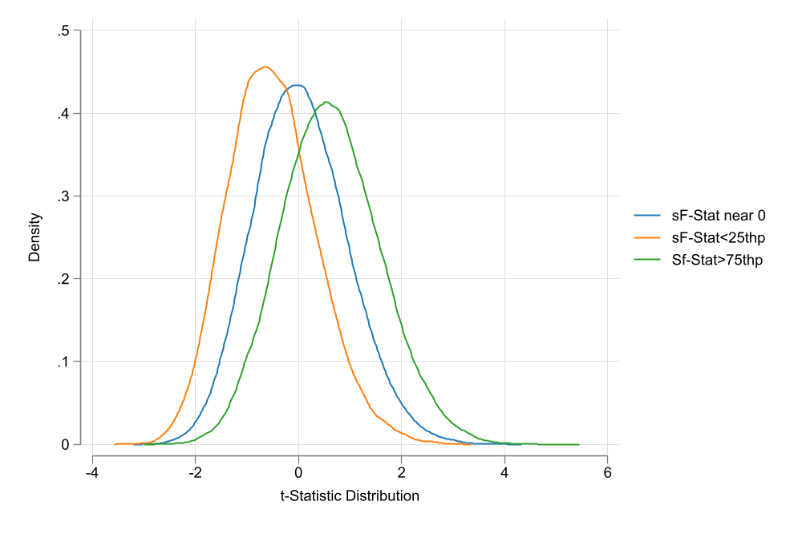
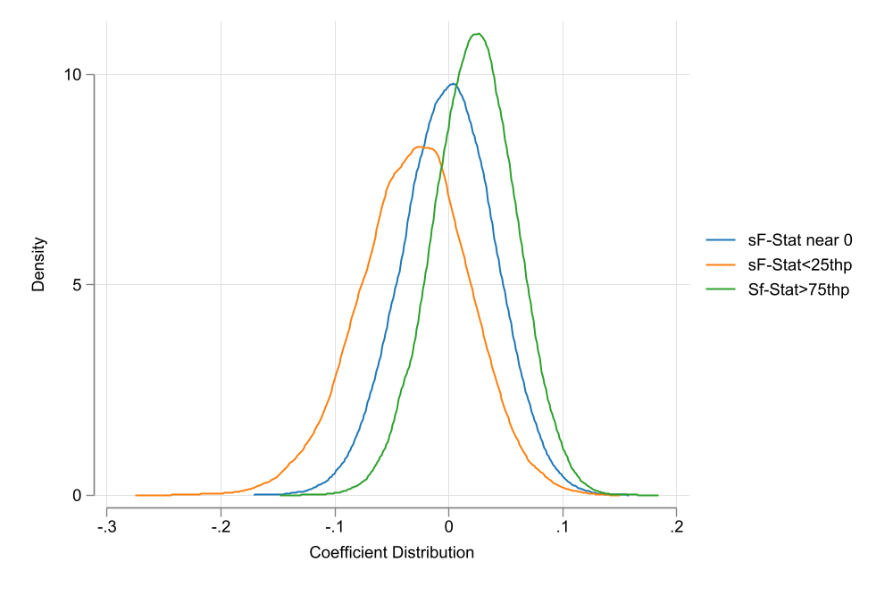

Using a Small Simulation, and based on current research, I ilustrate why F=10, is not enough for inference.
Stata
Programming
Econometrics
Weak IV
Author
Fernando Rios-Avila
Published
August 15, 2023
\(F \geq 10 \rightarrow\) Strong instrument! (or is it?)
If you are “old-school” like me, and you are using instrumental variables, you probably are still relying on the rule thumb of using and \(F \geq 10\) to Judge if an instrument is strong enough to proceed and do statistical inference.
This “critical” value was constructed based on the research by Staiger and Stock (1997) and Stock and Yogo (2005), and is still included in introductory econometric textbooks, and thought in econometric courses. This are said to be valid in cases where there is no heteroskedasticity in the model.
As described in Wooldridge’s “Introductory Econometrics: A Modern Approach” 7e, if models are heteroskedastic, it makes sense that more strict requirements are needed to indicate one has a strong Instrument. Specifically, he cites work by Olea and Pflueger (2013) who suggest that one might need an \(F\geq 20\) to ensure instruments are sufficiently strong.
In Lee et al. (2022), however, the bar to judge an instrument strong has been raised even higher. What they suggest is that one must consider the joint distribution of the first stage “F-stat” statistic and second stage “t-stat”, to make any inference judgements. Specifically, the authors indicate that, in order to use “standard” critical values to judge significance in second stage models (say the 1.96 for and \(\alpha=5\%\)), one should have an F-statistic of at least 104.7!. Alternatively, if we keep using an \(F=10\), the t-stat critical value should be at least 3.43.
How bad is the problem?
While I was perplex at first regarding the “new” requirements for a high “F-stat”, I also understood that this problem was important. Because of this, I decided to do a small simulation study to see how bad the problem was in terms of inference, using different levels of Instruments strength. Let me show you how I did this, and what it tells me in regards to previous beliefs about the \(F\geq 10\) rule.
Bottom line, in my design, an \(E(F)=10\) is not enough to judge an instrument to be strong enough to guarantee the distribution of the coefficient of interest follows a normal distribution. And, if the distribution of such coefficient is not normal, then standard “t-statistics” may be inappropiate when making statistical inference.
Setup
For this simulation, I will use a very simple structure that considers a single endogenous variable and a single instrument, without any other controls.
First, The common Error: To simulate endogeneity, I will assume there is a common unobserved factor \(e\) that affects the endogenous variable \(x\) and outcome \(y\). This unobserved error is assumed to follow a standardized normal distribution.
\[e\sim N(0,1)\]
The instrument: The instrument will be a completely independent variable that also follows a standardized normal distribution.
\[z\sim N(0,1)\]
The endogenous variable: This variable will be created by adding the endogenous common error \(e\), the instrument \(z\) and a random error \(u_x\). To control the strength of the instrument, the endogenous variable \(x\) is defined as:
\[x=1 + z + (e+u_x)*\sqrt{2\frac{N}{F}}\]
where \(N\) is the number of observations, and \(F\) is the Expected Strength of the instrument.
The dependent variable: It will combine the common error and a random standardize normal distributed error, and assume \(x\) has no explanatory power. The common error \(e\) and the standardized normal distributed error \(u_y\) are scaled so the combined error has a variance of 1.
\[y = 1 + (e + u_y)*\sqrt{2}\]
The simulation is run 100’000 times, with a sample of 500 observations each, using various levels of “F-statistics”: 5, 10, 20, 40, 80 and 160. To speed up the simulation excercise, I use parallel, a community-contributed command written Vega Yon and Quistorff (2019). You can find the latest version of it on their github.
The code for the simulation program is as follows:
program simx, eclassclearlocalN`1'localF`2'local sig = sqrt(`N'/ `F')setobs`N'gene = rnormal()gen z = rnormal() gen x = 1 + z + (e+rnormal())*sqrt(.5)*`sig'geny = 1 + ( e + rnormal())*sqrt(.5)reg x z, matrix b=(_b[z]/_se[z])^2 ivregress 2sls y (x=z), matrix b=b,_b[x],_b[x]/_se[x]ereturnpost bend
and the simulation itself can be run using:
net install parallel, from(https://raw.github.com/gvegayon/parallel/stable/) replacematamata mlib index** Initializes number of"Stata" instancesparallel initialize 17** Some tempfiles to store the simulationstempfile f0 f1 f2 f3 f4 f5** A loop for the simulationsforvalues i = 0/5 {local j = 5*2^`i' parallel sim, reps(100000): simx 500 `j'genF=`j'save`f`i''}** Append and renameclearappendusing`f0'appendusing`f1'appendusing`f2'appendusing`f3'appendusing`f4'appendusing`f5'ren (_b_c1 _b_c2 _b_c3 F) (f_stat b_coef t_stat FF)
If you are interested in the data, it can be downloaded from here. It is a Stata file with 4 variables and 60k observations.
Results
First, to make sure data was created correctly, we can do a quick summary statistics of the F-statistic of the first stage regression.
Code
use weakiv, cleartabstat f_stat , by(FF) stats(meanmedian)
What we see from Figure 1 is that the distribution of the t-statistic is not consistent with a normal distribution. For and \(F\leq 40\), there is a clear discrepancy between the normal distribution (orange) and the empirical t-stat distribution (blue). As consequence, when coefficients are possitive, it is more likely to reject the null hypothesis, but also under-reject when the coefficients are negative.
Once we reach an F-statistic of at least 80 and 160, the difference between the normal distribution and the t-statistic empirical distribution dissapears. Lesson, if your F-stat is “low”, perhaps using standard distributions may be innapropriate.
One problem with the results in Figure 1 was that when \(E(F)\) is low, there are many instances where the F-distribution is less than 10. One may say that is the reason why the distribution is skew in Figure 1. A simple way to avoid this is by ploting the same information, but restricting F-statistics to be larger than 10.

Figure 2: T-Stat distribution by E(F) if F>10
Unfortunately, the situation is much worse. By constraining the F-statistic to be larger than 10, we are doing the equivalent of p-hacking (F hacking?), which further distorts the distribution of the endogenous variable. While it looks a bit more normal (distributed), we can see now that it over rejects the null hypothesis, if the true F-statistic was, in fact, lower. You can call this evidence of biased estimations.
Conclusions
This note was prepared with the intention of showing in class the consequences of weak IV’s. While I knew that this was an important problem, it was not completely clear what would the consequences in terms of distribution of the coefficient of interest would be.
Although this simulation is rather limited, it clearly shows problems of using weak instrumental variables (even when using the well known “rule of 10”). When the instrument is weak, even if its completely exogenous, the distribution of the endogenous variable coefficient will not be normal. Thus, further steps may be needed for constructing appropriate Confidence intervals.
Is everything lost? Perhaps not. In Stata, there is the community-contributed command weakiv (ssc install weakiv). This command construct alternative CI that take into account the presence of weak instrumental variables reporting adjusted CI. They seem to be closer to what I expect, based on this simulations.
Extra
Ok, so while you do simulations like this, sometimes, you find very interesting results. Some worth exploring.
What did I see (you may ask)? First, let me concentrate only on the cases with “stronger” IVs. In particular those with an \(E(F)\leq 80\). None of the F-statistics is less than 10 across all simulations in this case.
Second, because the F-Statistics have different ranges, I will standardize them across groups. This will make it easier to compare scatter plots.
Code
** Keeping only FF>=80qui {keepif FF>=80gen f_stat2=.foreach i in 80 160 {sum f_stat if FF==`i'replace f_stat2 = (f_stat-FF)/r(sd) if FF==`i' }}twoscatter t_stat f_stat2 , by(FF , col(3) note("")) ysize(5) xsize(10) ///ytitle(T-stat) xtitle("Standardized F-Stat")graphexport fig3.png, replacewidth(1000)

Figure 3: T-Stat vs SF-Stat
What I see in Figure 3 is that higher F-Stats in the first Stage seem to increase the likelihood of the t-value to be positive and significant. Whereas lower F-stats are associated with the opposite (but to a lesser extent possibly due to simulation design).
Code
two (kdensity t_stat ifinrange(f_stat2,-.65,.7)) /// (kdensity t_stat if f_stat2<-.65) /// (kdensity t_stat if f_stat2>.7) , ///legend(order(1 "sF-Stat near 0" 2 "sF-Stat<25thp" 3 "Sf-Stat>75thp")) ///xtitle("t-Statistic Distribution") ytitle("Density")graphexport fig4.png, replacewidth(1000) two (kdensity b_coef ifinrange(f_stat2,-.65,.7)) /// (kdensity b_coef if f_stat2<-.65) /// (kdensity b_coef if f_stat2>.7) , ///legend(order(1 "sF-Stat near 0" 2 "sF-Stat<25thp" 3 "Sf-Stat>75thp")) ///xtitle("Coefficient Distribution") ytitle("Density")graphexport fig5.png, replacewidth(1000)

(a) t-Stat Distribution

(b) Coefficient Distribution
Figure 4: Distribution based on Standardized F-Statistic
Figure 4 shows the distribution of both the t-statistic and the coefficient of the endogenous variables for three groups. Observations where the F-statistic is between the 25th and 75th percentile of the distribution (Thus close to the E(F)), and observations for the top (above 75th percentile) and bottom (below 25th percentile) of the distribution. This is similar to the previous conjecture. Even if the instrument is “strong”, if the sample F-statistic is too high or low compared to the E(F), inference may be biased.
This is just conjecture, however, it may be the case that IV’s are more difficult to trust that I previously expected. If your first stage has a high F-Statistic, it may be worth asking:
is this F-statistic larger than expected?
If the answer is yes, then you are likely to be over (or under) stating your coefficients.
If the F-statistic is just as large as expected. Then we may be able to trust the estimated coefficients.
References
Lee, David S., Justin McCrary, Marcelo J. Moreira, and Jack Porter. 2022. “Valid t-Ratio Inference for IV.”American Economic Review 112 (10): 3260–90. https://doi.org/10.1257/aer.20211063.
Olea, José Luis Montiel, and Carolin Pflueger. 2013. “A Robust Test for Weak Instruments.”Journal of Business & Economic Statistics 31 (3): 358–69. https://doi.org/10.1080/00401706.2013.806694.
Staiger, Douglas, and James H. Stock. 1997. “Instrumental Variables Regression with Weak Instruments.”Econometrica 65 (3): 557–86. http://www.jstor.org/stable/2171753.
Stock, James H, and Motohiro Yogo. 2005. “Testing for Weak Instruments in Linear Iv Regression, in Dwk Andrews and Jh Stock, Eds., Identification and Inference for Econometric Models: Essays in Honor of Thomas j. Rothenberg. Cambridge: Cambridge University Press.” Cambridge University Press, Cambridge, UK.
Vega Yon, George G., and Brian Quistorff. 2019. “Parallel: A Command for Parallel Computing.”The Stata Journal 19 (3): 667–84. https://doi.org/10.1177/1536867X19874242.
Source Code
---title: "Weak IV: And the problem of Inference"description: "Using a Small Simulation, and based on current research, I ilustrate why F=10, is not enough for inference. "author: "Fernando Rios-Avila"date: "8/15/2023"categories: - Stata - Programming - Econometrics - Weak IVdraft: falsebibliography: ref.bib---## $F \geq 10 \rightarrow$ Strong instrument! (or is it?)If you are "old-school" like me, and you are using instrumental variables, you probably are still relying on the rule thumb of using and $F \geq 10$ to Judge if an instrument is strong enough to proceed and do statistical inference.This "critical" value was constructed based on the research by @Staiger_stock_1997 and @stock_yogo2005, and is still included in introductory econometric textbooks, and thought in econometric courses. This are said to be valid in cases where there is no heteroskedasticity in the model. As described in Wooldridge's ***"Introductory Econometrics: A Modern Approach" 7e***, if models are heteroskedastic, it makes sense that more strict requirements are needed to indicate one has a strong Instrument. Specifically, he cites work by @olea_pflueger2013 who suggest that one might need an $F\geq 20$ to ensure instruments are sufficiently strong.In @lee2022, however, the bar to judge an instrument strong has been raised even higher. What they suggest is that one must consider the joint distribution of the first stage "F-stat" statistic and second stage "t-stat", to make any inference judgements. Specifically, the authors indicate that, in order to use "standard" critical values to judge significance in second stage models (say the 1.96 for and $\alpha=5\%$), one should have an F-statistic of at least 104.7!. Alternatively, if we keep using an $F=10$, the t-stat critical value should be at least 3.43. ## How bad is the problem?While I was perplex at first regarding the "new" requirements for a high "F-stat", I also understood that this problem was important. Because of this, I decided to do a small simulation study to see how bad the problem was in terms of inference, using different levels of Instruments strength. Let me show you how I did this, and what it tells me in regards to previous beliefs about the $F\geq 10$ rule. Bottom line, in my design, an $E(F)=10$ is not enough to judge an instrument to be strong enough to guarantee the distribution of the coefficient of interest follows a normal distribution. And, if the distribution of such coefficient is not normal, then standard "t-statistics" may be inappropiate when making statistical inference.## SetupFor this simulation, I will use a very simple structure that considers a single endogenous variable and a single instrument, without any other controls. - First, The common Error: To simulate endogeneity, I will assume there is a common unobserved factor $e$ that affects the endogenous variable $x$ and outcome $y$. This unobserved error is assumed to follow a standardized normal distribution.$$e\sim N(0,1)$$- The instrument: The instrument will be a completely independent variable that also follows a standardized normal distribution. $$z\sim N(0,1)$$- The endogenous variable: This variable will be created by adding the endogenous common error $e$, the instrument $z$ and a random error $u_x$. To control the strength of the instrument, the endogenous variable $x$ is defined as:$$x=1 + z + (e+u_x)*\sqrt{2\frac{N}{F}}$$where $N$ is the number of observations, and $F$ is the Expected Strength of the instrument. - The dependent variable: It will combine the common error and a random standardize normal distributed error, and assume $x$ has no explanatory power. The common error $e$ and the standardized normal distributed error $u_y$ are scaled so the combined error has a variance of 1.$$y = 1 + (e + u_y)*\sqrt{2}$$The simulation is run 100'000 times, with a sample of 500 observations each, using various levels of "F-statistics": 5, 10, 20, 40, 80 and 160. To speed up the simulation excercise, I use `parallel`, a community-contributed command written @VegaYon2019. You can find the latest version of it on their [github](https://github.com/gvegayon/parallel).The code for the simulation program is as follows:```stataprogram simx, eclass clear local N `1' local F `2' local sig = sqrt(`N'/ `F') set obs `N' gen e = rnormal() gen z = rnormal() gen x = 1 + z + (e+rnormal())*sqrt(.5)*`sig' gen y = 1 + ( e + rnormal())*sqrt(.5) reg x z, matrix b=(_b[z]/_se[z])^2 ivregress 2sls y (x=z), matrix b=b,_b[x],_b[x]/_se[x] ereturn post bend```and the simulation itself can be run using:```statanet install parallel, from(https://raw.github.com/gvegayon/parallel/stable/) replacemata mata mlib index** Initializes number of "Stata" instancesparallel initialize 17** Some tempfiles to store the simulationstempfile f0 f1 f2 f3 f4 f5** A loop for the simulationsforvalues i = 0/5 { local j = 5*2^`i' parallel sim, reps(100000): simx 500 `j' gen F=`j' save `f`i''}** Append and renameclear append using `f0'append using `f1'append using `f2'append using `f3'append using `f4'append using `f5'ren (_b_c1 _b_c2 _b_c3 F) (f_stat b_coef t_stat FF)```If you are interested in the data, it can be downloaded from [here](weakiv.dta). It is a `Stata` file with 4 variables and 60k observations.## ResultsFirst, to make sure data was created correctly, we can do a quick summary statistics of the F-statistic of the first stage regression.```{stata}use weakiv, cleartabstat f_stat , by(FF) stats(mean median)```The mean is a bit higher than the intended F-Statistic, whereas the median is closer. Both statistics suggesting simulations were created as intended. ```{stata}*| fig-align: center*| fig-cap: F-Statistics Distributionset scheme white2color_style tableaujoy_plot f_stat, by(FF) gap0 color(%50) alegend xtitle("F-stat") xline(10 20 100)```We can also see the distribution of the F-statistics across all simulations. What about the endogenous variable coefficient? While we could examine the coefficient themselves, I find it more useful to examine the distribution of the t-statistics in the second Stage.```{stata}*| output: falsetwo kdensity t_stat || function y = normalden(x) , range(-3 3) , by(FF, note("")) legend(order(1 "T-stat distribution" 2 "Normal") cols(2)) xline(-1.96 1.96)graph export fig1.png, replace width(1000) two kdensity t_stat if f_stat>10 || function y = normalden(x) , range(-3 3) , by(FF, note("")) legend(order(1 "T-stat distribution" 2 "Normal") cols(2)) xline(-1.96 1.96)graph export fig2.png, replace width(1000) ```{fig-pos="center" #fig-fig1 width=80%}What we see from @fig-fig1 is that the distribution of the t-statistic is not consistent with a normal distribution. For and $F\leq 40$, there is a clear discrepancy between the normal distribution (orange) and the empirical t-stat distribution (blue). As consequence, when coefficients are possitive, it is more likely to reject the null hypothesis, but also under-reject when the coefficients are negative. Once we reach an F-statistic of at least 80 and 160, the difference between the normal distribution and the t-statistic empirical distribution dissapears. Lesson, if your F-stat is "low", perhaps using standard distributions may be innapropriate.One problem with the results in @fig-fig1 was that when $E(F)$ is low, there are many instances where the F-distribution is less than 10. One may say that is the reason why the distribution is skew in @fig-fig1. A simple way to avoid this is by ploting the same information, but restricting F-statistics to be larger than 10.{fig-pos="center" #fig-fig2 width=80%}Unfortunately, the situation is much worse. By constraining the F-statistic to be larger than 10, we are doing the equivalent of p-hacking (F hacking?), which further distorts the distribution of the endogenous variable. While it looks a bit more normal (distributed), we can see now that it over rejects the null hypothesis, if the true F-statistic was, in fact, lower. You can call this evidence of biased estimations.## ConclusionsThis note was prepared with the intention of showing in class the consequences of weak IV's. While I knew that this was an important problem, it was not completely clear what would the consequences in terms of distribution of the coefficient of interest would be.Although this simulation is rather limited, it clearly shows problems of using weak instrumental variables (even when using the well known "rule of 10"). When the instrument is weak, even if its completely exogenous, the distribution of the endogenous variable coefficient will not be normal. Thus, further steps may be needed for constructing appropriate Confidence intervals.Is everything lost? Perhaps not. In `Stata`, there is the community-contributed command `weakiv` (ssc install weakiv). This command construct alternative CI that take into account the presence of weak instrumental variables reporting adjusted CI. They seem to be closer to what I expect, based on this simulations.## ExtraOk, so while you do simulations like this, sometimes, you find very interesting results. Some worth exploring.What did I see (you may ask)? First, let me concentrate only on the cases with "stronger" IVs. In particular those with an $E(F)\leq 80$. None of the F-statistics is less than 10 across all simulations in this case.Second, because the F-Statistics have different ranges, I will standardize them across groups. This will make it easier to compare scatter plots.```{stata}*| output: false** Keeping only FF>=80qui { keep if FF>=80 gen f_stat2=. foreach i in 80 160 { sum f_stat if FF==`i' replace f_stat2 = (f_stat-FF)/r(sd) if FF==`i' }}two scatter t_stat f_stat2 , by(FF , col(3) note("")) ysize(5) xsize(10) /// ytitle(T-stat) xtitle("Standardized F-Stat")graph export fig3.png, replace width(1000)```{fig-pos="center" #fig-fig3 width=80%}What I see in @fig-fig3 is that higher F-Stats in the first Stage seem to increase the likelihood of the t-value to be positive and significant. Whereas lower F-stats are associated with the opposite (but to a lesser extent possibly due to simulation design). ```{stata}*| output: falsetwo (kdensity t_stat if inrange(f_stat2,-.65,.7)) /// (kdensity t_stat if f_stat2<-.65) /// (kdensity t_stat if f_stat2>.7) , /// legend(order(1 "sF-Stat near 0" 2 "sF-Stat<25thp" 3 "Sf-Stat>75thp")) /// xtitle("t-Statistic Distribution") ytitle("Density")graph export fig4.png, replace width(1000) two (kdensity b_coef if inrange(f_stat2,-.65,.7)) /// (kdensity b_coef if f_stat2<-.65) /// (kdensity b_coef if f_stat2>.7) , /// legend(order(1 "sF-Stat near 0" 2 "sF-Stat<25thp" 3 "Sf-Stat>75thp")) /// xtitle("Coefficient Distribution") ytitle("Density")graph export fig5.png, replace width(1000) ```::: {#fig-fig4 layout-ncol=2}{#fig-fig4a}{#fig-fig4b}Distribution based on Standardized F-Statistic:::@fig-fig4 shows the distribution of both the t-statistic and the coefficient of the endogenous variables for three groups. Observations where the F-statistic is between the 25th and 75th percentile of the distribution (Thus close to the E(F)), and observations for the top (above 75th percentile) and bottom (below 25th percentile) of the distribution. This is similar to the previous conjecture. Even if the instrument is "strong", if the sample F-statistic is too high or low compared to the E(F), inference may be biased.This is just conjecture, however, it may be the case that IV's are more difficult to trust that I previously expected. If your first stage has a high F-Statistic, it may be worth asking:> is this F-statistic larger than expected?If the answer is yes, then you are likely to be over (or under) stating your coefficients.If the F-statistic is just as large as expected. Then we may be able to trust the estimated coefficients. # References